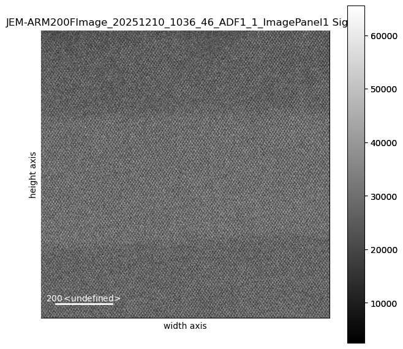
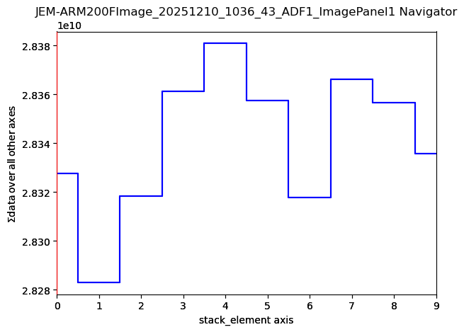
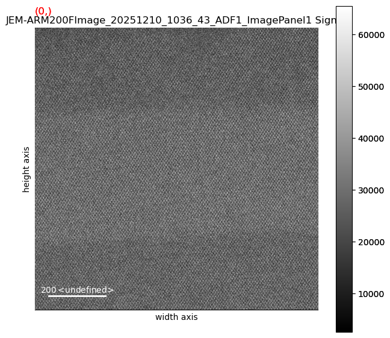
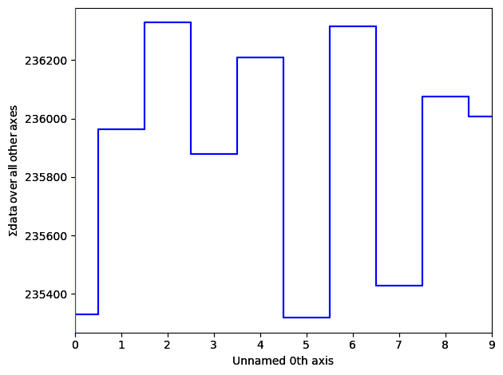
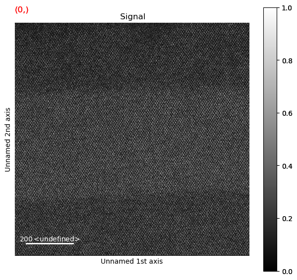

#import the modules we'll be using later.
import os, re, json, hashlib
from datetime import datetime
from pathlib import Path
import numpy as np
import matplotlib.pyplot as plt
import tifffile as tiff
import h5py # Used for HDF5, if we decide to actually use that.
from scipy import ndimage
from scipy.signal import fftconvolve
import hyperspy.api as hs
Hyperspy experiments
This is a throwaway notebook just for experimenting. DO NOT assume anything in here is correct, makes sense, or for that matter safe to be in the same room with.
First, the simplest use of HyperSpy just to get the blood flowing and limbs limbered up.
# straight out of the hyperspy example directory. Possibly with some changes. Likely.
import numpy as np
import hyperspy.api as hs
# Create an image stack with random data
im = hs.signals.Signal2D(np.random.random((16, 32, 32)))
# Define the axis properties
im.axes_manager.signal_axes[0].name = 'X'
im.axes_manager.signal_axes[0].units = 'nm'
im.axes_manager.signal_axes[0].scale = 0.1
im.axes_manager.signal_axes[0].offset = 0
im.axes_manager.signal_axes[1].name = 'Y'
im.axes_manager.signal_axes[1].units = 'nm'
im.axes_manager.signal_axes[1].scale = 0.1
im.axes_manager.signal_axes[1].offset = 0
im.axes_manager.navigation_axes[0].name = 'time'
im.axes_manager.navigation_axes[0].units = 'fs'
im.axes_manager.navigation_axes[0].scale = 0.3
im.axes_manager.navigation_axes[0].offset = 100
# Give a title
im.metadata.General.title = 'Random image stack'
# Plot it
im.plot()Now let’s define some of the convenience functions we were using in the ChatGPT-generated examples.
#straight outta Codex...
#
# === Module 0.1 utilities ===
HAS_TIFFFILE = True
HAS_H5PY = True
HAS_SCIPY = True
def read_tiff(path):
if HAS_TIFFFILE:
arr = tiff.imread(path)
return arr
import matplotlib.image as mpimg
arr = mpimg.imread(path)
if arr.ndim == 3:
arr = arr.mean(axis=2)
return arr.astype(float)
def save_jpeg_thumbnail(img2d, out_path, p_low=1, p_high=99, max_size=512):
img = img2d.astype(float)
lo, hi = np.percentile(img, [p_low, p_high])
img = np.clip((img - lo) / (hi - lo + 1e-12), 0, 1)
H, W = img.shape
scale = max(H, W) / max_size
if scale > 1:
step = int(np.ceil(scale))
img = img[::step, ::step]
plt.imsave(out_path, img, cmap=None)
def image_stats(img2d):
img = img2d.astype(float)
return {
"shape": list(img.shape),
"dtype": str(img2d.dtype),
"min": float(np.min(img)),
"max": float(np.max(img)),
"mean": float(np.mean(img)),
"std": float(np.std(img)),
"p1": float(np.percentile(img, 1)),
"p50": float(np.percentile(img, 50)),
"p99": float(np.percentile(img, 99))
}
def sha256_file(path, chunk_size=1024*1024):
h = hashlib.sha256()
with open(path, "rb") as f:
while True:
b = f.read(chunk_size)
if not b:
break
h.update(b)
return h.hexdigest()
def safe_mkdir(p):
Path(p).mkdir(parents=True, exist_ok=True)
# Go on and turn off traitsui gui on the GUIs tab!!!
#hs.preferences.gui()…and go ahead now and set the paths for inputs and outputs.
SINGLE_TIFF_PATH = "/Users/escott/projects/working-CITEAM/SiGe/JEM-ARM200FImage_20251210_1036_43_ADF1_ImagePanel1/JEM-ARM200FImage_20251210_1036_46_ADF1_1_ImagePanel1.tif" # e.g., "data/single/micrograph_01.tif"
STACK_FOLDER_PATH = "/Users/escott/projects/working-CITEAM/SiGe/JEM-ARM200FImage_20251210_1036_43_ADF1_ImagePanel1" # e.g., "data/stack_01_frames/"
OUTPUT_DIR = "outputs_0_1"
safe_mkdir(OUTPUT_DIR)
print("OUTPUT_DIR:", OUTPUT_DIR)OUTPUT_DIR: outputs_0_1Will probably move this to much later, but the following cell will load a single image into a numpy array
# 0.1.1 — Load a single TIFF
if not SINGLE_TIFF_PATH:
print("Set SINGLE_TIFF_PATH to a TIFF file.")
else:
img = read_tiff(SINGLE_TIFF_PATH)
if img.ndim == 3:
img = img.mean(axis=2)
img = img.astype(float)
print("Single image stats:", json.dumps(image_stats(img), indent=2))
plt.figure(figsize=(5,5)); plt.imshow(img); plt.title("0.1.1 Single TIFF"); plt.axis("off"); plt.show()
thumb_path = os.path.join(OUTPUT_DIR, Path(SINGLE_TIFF_PATH).stem + "_thumb.jpg")
save_jpeg_thumbnail(img, thumb_path)
print("Saved thumbnail:", thumb_path)Load the image again, but this time with HyperSpy.
We will create the “s” variable for playing with HyperSpy or the above-defined “img” variable for doing the Old School way.
# hs is hyperspy.
s = hs.load(SINGLE_TIFF_PATH)
print("loaded an image")
#print(s[0].original_metadata.ImageDescription)loaded an image#print("s =", s)
print(s[0].metadata)
print("===============")
print(s[0].original_metadata)
print("length is ", len(s))
dir(s[0])s[0].plot()
s[1].plot()s[0].axes_manager.gui()s[0].plot()Load an image stack (via HyperSpy’s load() function)
tiffFilesWildcard = STACK_FOLDER_PATH + "/*.tif"
imgStack = hs.load(tiffFilesWildcard, stack=True)
#print(imgStack[0])
#imgStack[0]
print(type(imgStack))
print(len(imgStack))
#print(imgStack[0])
#print(imgStack[0].metadata)
#print("=================")
#print(imgStack[0].original_metadata)
<class 'list'>
2print(imgStack[0].data[0][0][30])
print(imgStack[0].data[1][0][30])
imgStack[0].align2D()
imgStack[0].plot()
print(imgStack[0].data[0][0][30])
print(imgStack[0].data[1][0][30])41712
28616100%|████████████████████████████████████████████████████████████████████████████████████████████████████████████████████████████████████████████| 10/10 [00:03<00:00, 2.98it/s]25215
25792

imgStack[0].axes_manager.gui()
imgStack[0].plot()

Plot, Calibrate, and Remove Some Noise
# it's currently full of 16 bit integers (0 to 65535). We need floating-point values for doing actual math. So we convert:
imgStack[0].change_dtype('float64')
imgStack[0].decomposition() # taking ALL the defaults - a lot to understand here.
imgStack[0].plot()
Decomposition info:
normalize_poissonian_noise=False
algorithm=SVD
output_dimension=None
centre=None

# save the filtered, shifted image to an HDF5 file
imgStack[0].save(OUTPUT_DIR + "/savedResult")
# calibrate
from ipywidgets import interact, widgets
%matplotlib widget
imgStack[0].plot()
imgStack[0].calibrate(interactive=True)
imgStack[0].axes_manager.gui()imgStack[0].plot()Directly Reading and Writing the Underlying Data
We can look directly into a Hyperspy signal object and access the exact data that respresents the image using any tools and techniques we want to.
## Clipping and Gamma Correction
# Clipping
stack_n = np.empty_like(imgStack[0].data)
for i in range(imgStack[0].data.shape[0]):
lo, hi = np.percentile(imgStack[0].data[i], [1, 99])
stack_n[i] = np.clip((imgStack[0].data[i] - lo) / (hi - lo + 1e-12), 0, 1)
# Gamma correction
gamma = 1 # or 0.5, or 1.5, or whatever. 1 is identity, so don't expect much :-)
gamma_corrected = np.clip(stack_n ** gamma, 0 ,1)
freshNewHS = hs.signals.Signal2D(gamma_corrected)
freshNewHS.plot()


save_jpeg_thumbnail(gamma_corrected[0], "/tmp/gct.jpg")Extra Greebles:
from PIL import Image
from PIL.TiffTags import TAGS
pimg = Image.open('/Users/escott/projects/CITEAM/notebooks/SiGe/JEM-ARM200FImage_20251210_1036_43_ADF1_ImagePanel1/JEM-ARM200FImage_20251210_1036_56_ADF1_4_ImagePanel1.tif')
blah = 2
for key, value in pimg.tag.items():
print(f"{key}: {value}")
print("=========")
print(pimg.tag["Resolution"])
#with Image.open('/Users/escott/projects/CITEAM/notebooks/SiGe/JEM-ARM200FImage_20251210_1036_43_ADF1_ImagePanel1/JEM-ARM200FImage_20251210_1036_56_ADF1_4_ImagePanel1.tif') as pimg:
# for key in pimg.tag_v2.tags:
# print(key)
# meta_dict = {TAGS[key] : pimg.tag[key] for key in pimg.tag.iterkeys()}